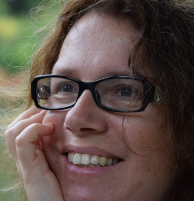

|

|
SIMULATING SPIN MODELS ON GPU: AN INTRODUCTIONKatarzyna Sznajd-WeronWroclaw University of Science and TechnologyThe talk is thought of as a personal journey through the wonderful world of simple models designed to describe complex systems. I am not going to make a review, neither talk about the most important models. Instead I will present models and papers that influenced my scientific work, brought me new ideas or surprised me. My talk will be divided into three parts. In the first part I will present simple models of biological evolution and population dynamics. Among them the seminal Bak-Seppen model, particularly important from my perspective. In the second part I will talk about interactions between physics and social sciences. I will start from the history of sociology and “social physics”, next introduce several simple models of societies. I will try to answer the question whether they should be regarded as tools or as toys. Finally, in the last part, I will address the question: Can people be treated as particles? I will present several social experiments and show how the results of these experiments were used to build a simple model of opinion dynamics, known as the Sznajd model. Something to read:
Personal webpage |